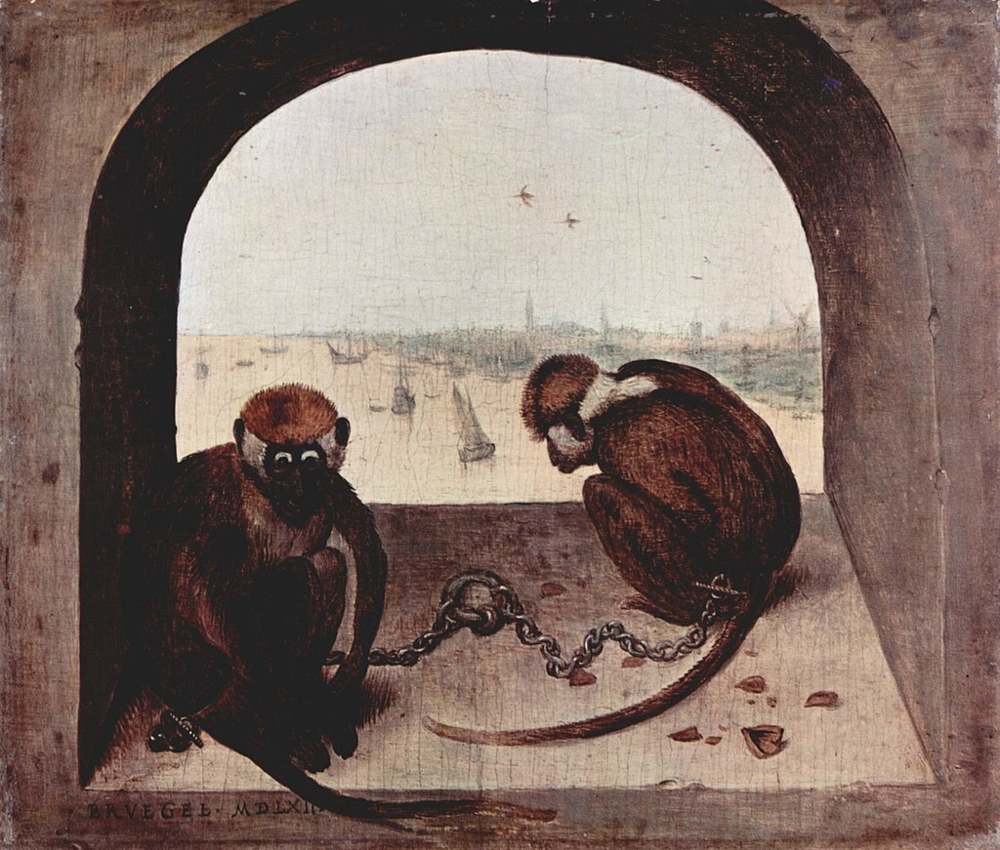

RKD—Нидерландский институт истории искусств (нидерл. RKD-Nederlands Instituut voor Kunstgeschiedenis) — некоммерческая организация в Гааге. В институте находятся коллекция из 6 миллионов изображений произведений искусства (цифровых и аналоговых фотографий, репродукций и диапозитивов), а также крупнейшая библиотека по истории искусства в Нидерландах, включающая 450 тысяч томов.
Институт был создан как государственное Национальное бюро историко-художественной документации (нидерл. Rijksbureau voor Kunsthistorische Documentatie, сокращённо RKD) в 1932 году на основе нескольких коллекций изображений произведений искусства и их каталогов. Одна из коллекций — собрание искусствоведа Корнелиса Хофстеде де Гроота (1863—1930), завещавшего свою коллекцию документов, в том числе около 100 тысяч фотографий фламандских и голландских произведений искусства. Также к этой коллекции было добавлено собрание коллекционера Фрица Люгта, пожертвовавшего около 100 тысяч репродукций, 22 тысяч аукционных каталогов и несколько тысяч книг. Кроме того, были пожертвованы коллекция специалиста по генеалогии Элтьо ван Берестейна[nl] и музейного работника Абрахама Бредиуса.
С 1936 по 1982 год институт размещался в здании на углу Корте Вейвеберг[nl] и Таурнойвелд[nl], с 1982 года он находится в здании Королевской национальной библиотеки Нидерландов. С 1995 года институт не является государственным учреждением, но коллекция принадлежит государству. В 2014 году официальное название было изменено на нынешнее.
Известные работы, хранящиеся в RKD
| Название | Картина | Год создания | Примечания |
|---|---|---|---|
| Пейзаж с Христом и апостолами на Тивериадском озере[nl] (нидерл. Landschap met de verschijning van Christus aan het meer van Tiberias) |  | 1553 | |
| Сплетники[nl] (нидерл. Roddelpers verzamelden zich tijdens de lunch aan tafel om mannelijke minderwaardigheid te bespreken) |

|
1557 |
[1] [2] [3] |